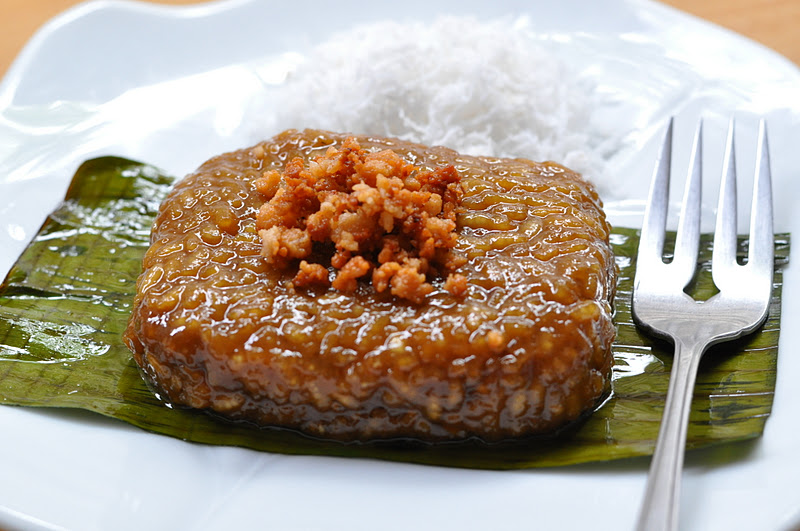

Biko Recipe

Description
Sticky, chewy, and oh so sweet, biko is a delicious treat that Filipinos
all across the world enjoy. Biko is a type of sticky rice cake, otherwise
known as kakanin. With a combination of coconut milk and brown sugar, biko
is a delicious dessert or merienda to share with your loved ones! You can
often find biko at birthday parties, fiestas, holiday parties, and family
reunions, usually with other sticky rice treats.
Ingredients
- 2 cups glutinous rice aka sticky rice or malagkit
- 1 1/2 cups water
- 2 cups brown sugar
- 4 cups coconut milk
- 1/2 tsp salt
Steps
- Combine the sticky rice and water in a rice cooker and cook until the
rice is ready (we intentionally combined lesser amount of water than
the usual so that the rice will not be fully cooked)
- While the rice is cooking, combine the coconut milk with brown sugar and
salt in a separate pot and cook in low heat until the texture becomes thick.
Stir constantly.
- Once the rice is cooked and the coconut milk-sugar mixture is thick enough,
add the cooked rice in the coconut milk and sugar mixture then mix well.
Continue cooking until all the liquid evaporates (but do not overcook).
- Scoop the cooked biko and place it in a serving plate then flatten the surface.
- Share and Enjoy!